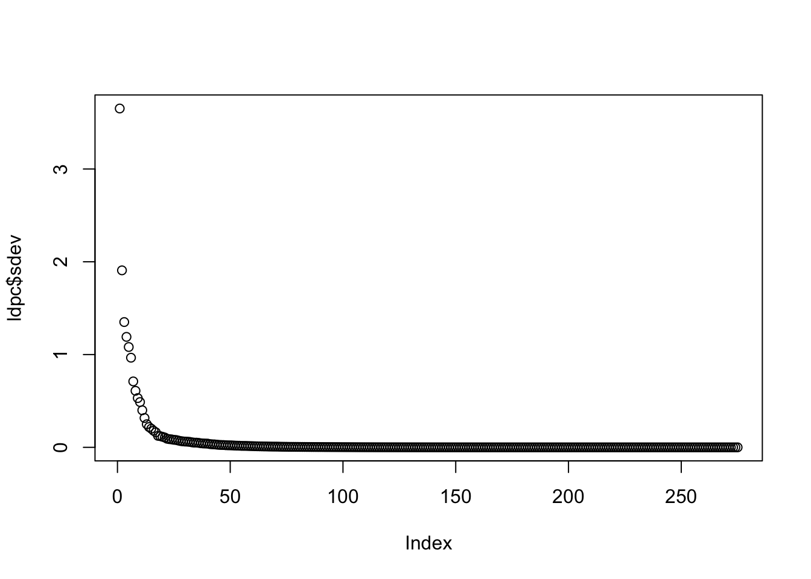
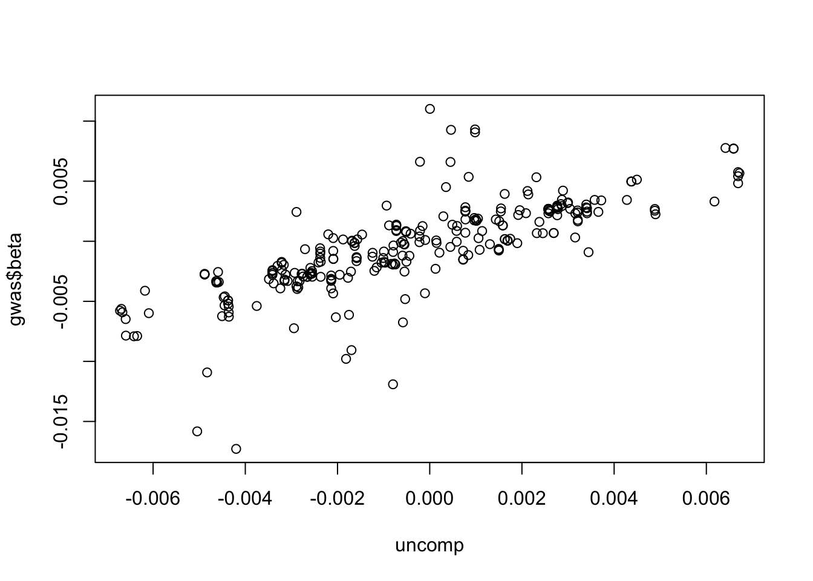

Summary statistics typically have a lot of redundant information due to LD. Can we improve storage space by converting to a sparse format using an external LD reference panel?
Overall strategy
Two types of compression - lossless and lossy. Lossless preserves the inforation perfectly. Lossy allows some loss of information to achieve computational / storage improvement.
Lossless compression:
1mb regions with suggestive association e.g. p-value < 1e-5
cis regions of molecular traits
Lossy compression
all other regions
Strategies for lossy compression
Use external LD reference panel, chunk up genome into areas of distinct LD, decompose summary statistics into eigenvectors and retain only the first X eigenvectors that explain sufficient variation
Retain only the sign of the effect estimate
Remove entirely and assume beta = 0
Determining the effectiveness of compression
data storage saving
time cost
loss of precision
bias?
sensitivity to ld reference panel
Impact on different types of analyses e.g.
colocalisation
mr
ld score regression
bias of effects
Example of lossy LD compression of betas
Download some LD reference data e.g. from here: http://fileserve.mrcieu.ac.uk/ld/1kg.v3.tgz
Download some GWAS summary statistics: https://gwas.mrcieu.ac.uk/files/ukb-b-19953/ukb-b-19953.vcf.gz
Have bcftools on path
Have plink on path
# Download example summary statistics (UKBB GWAS of BMI)
wget https://gwas.mrcieu.ac.uk/files/ukb-b-19953/ukb-b-19953.vcf.gz
wget https://gwas.mrcieu.ac.uk/files/ukb-b-19953/ukb-b-19953.vcf.gz.tbi
# Convert vcf to txt file, just keep chr 22
bcftools query \
-r 22 \
-e 'ID == "."' \
-f '%ID\t[%LP]\t%CHROM\t%POS\t%ALT\t%REF\t%AF\t[%ES\t%SE]\n' \
ukb-b-19953.vcf.gz | \
awk 'BEGIN {print "variant_id\tp_value\tchromosome\tbase_pair_location\teffect_allele\tother_allele\teffect_allele_frequency\tbeta\tstandard_error"}; {OFS="\t"; if ($2==0) $2=1; else if ($2==999) $2=0; else $2=10^-$2; print}' > gwas.tsv
# Download and extract the LD reference panel - 1000 genomes
wget http://fileserve.mrcieu.ac.uk/ld/1kg.v3.tgz
tar xvf 1kg.v3.tgz
# Get allele frequencies
plink --bfile EUR --freq --out EUR --chr 22
/Users/gh13047/Downloads/plink_mac_20230116/plink --bfile /Users/gh13047/repo/opengwas-api-internal/opengwas-api/app/ld_files/EUR --freq --out EUR --chr 22
Read in GWAS sum stats
library(ieugwasr)
API: public: http://gwas-api.mrcieu.ac.uk/
library(data.table)library(dplyr)
Attaching package: 'dplyr'
The following objects are masked from 'package:data.table':
between, first, last
The following objects are masked from 'package:stats':
filter, lag
The following objects are masked from 'package:base':
intersect, setdiff, setequal, union
Inverting LD matrices is sometimes difficult because of singularity issues. If at least one of the variants is a linear combination of the other variants in the region then the matrix will be singular. If sample sizes are very large then this is less likely to happen but matrices will still be near singular with occasional hugely inflated values.
To avoid these issues we could just estimate PCs on the LD matrix, and then perform a lossy compression by selecting the PCs that explain the top x% variation, and then only storing the \(\beta \Lambda\) matrix.
# Get principal components of the LD matrixldpc <-princomp(ldh)# This is the sd of each PCplot(ldpc$sdev)

Most variation explained by rather few SNPs - how many needed to explain 80% of LD info?
So 5% of the original data size required to capture 80% of the variation?
# Compress using only 80% of PC variationcomp <- (gwas$beta) %*% ldpc$loadings[,1:i]# Uncompress back to betasuncomp <- comp %*%t(ldpc$loadings[,1:i])
Plot compressed betas against original betas
plot(uncomp, gwas$beta)

How much info is lost?
cor(drop(uncomp), gwas$beta)
[1] 0.7708481
Is there bias? e.g. is coefficient different from 1?
summary(lm(gwas$beta ~drop(uncomp)))
Call:
lm(formula = gwas$beta ~ drop(uncomp))
Residuals:
Min 1Q Median 3Q Max
-0.0130259 -0.0009433 0.0001189 0.0010631 0.0110847
Coefficients:
Estimate Std. Error t value Pr(>|t|)
(Intercept) -6.928e-05 1.465e-04 -0.473 0.637
drop(uncomp) 9.973e-01 4.988e-02 19.994 <2e-16 ***
---
Signif. codes: 0 '***' 0.001 '**' 0.01 '*' 0.05 '.' 0.1 ' ' 1
Residual standard error: 0.002414 on 273 degrees of freedom
Multiple R-squared: 0.5942, Adjusted R-squared: 0.5927
F-statistic: 399.8 on 1 and 273 DF, p-value: < 2.2e-16
Doesn’t seem too bad. How consistent is the sign in the compressed vs original?
table(sign(gwas$beta) ==sign(uncomp))
FALSE TRUE
40 235
Overall 5% of the data seems to capture a reasonable amount of information.
Standard errors
The above does it for betas, but standard errors are a bit more complicated. Could just use the approx marginal \(se = 1/2pq\), but this will ignore correlation structure
Unfinished (ignore)
SE for each SNP will be
\[
s \rho s
\]
where s is diagonal matrix of standard errors. Represent \(\rho = QA^{-1}Q^T\) where A is diagonal matrix of eigenvalues and Q is matrix of eigenvectors / loadings
Ok this is a problem. How to select SNPs to include that will involve a non-singular matrix?
Make sparse
conv <-function(b, se, ld, xvar) {# make sparse bs <- (b %*%diag(xvar) %*%solve(ld) %*%diag(1/xvar)) %>%drop()# make dense again bhat <- (diag(1/xvar) %*% ld %*%diag(xvar) %*% bs) %>%drop()# create sparse version of bstibble(b, bs, bhat)}#o <- conv(gwas$beta, gwas$standard_error, ldh, xvar)
Make dense again
Compare sparse and dense
Simulations
library(mvtnorm)library(simulateGP)# Provide matrix of SNPs, phenotype y, true effects of SNPs on ycalcs <-function(x, y, b) { xpx <-t(x) %*% x D <-matrix(0, ncol(x), ncol(x))diag(D) <-diag(xpx)# Estimate effects (these will have LD influence) betahat <-gwas(y, x)$bhat# Convert back to marginal effects - this is approx, doesn't use AF bhat <-drop(solve(xpx) %*% D %*% betahat)# Determine betas with LD betahatc <- b %*% xpx %*%solve(D) %>% drop rho <-cor(x) xvar <-apply(x, 2, sd)# Another way to determine betas with LD using just sum stats betahatrho <- (diag(1/xvar) %*% rho %*%diag(xvar) %*% b) %>% drop# Go back to true betas betaback <- (betahatrho %*%diag(xvar) %*%solve(rho) %*%diag(1/xvar)) %>%drop()tibble(b, bhat, betahat, betahatc, betahatrho, betaback)}n <-10000nsnp <-20sigma <-matrix(0.7, nsnp, nsnp)diag(sigma) <-1x <-rmvnorm(n, rep(0, nsnp), sigma)b <-rnorm(nsnp) *100y <- x %*% b +rnorm(n)res <-calcs(x, y, b)res
sessionInfo()
R version 4.3.0 (2023-04-21)
Platform: aarch64-apple-darwin20 (64-bit)
Running under: macOS Monterey 12.6.8
Matrix products: default
BLAS: /Library/Frameworks/R.framework/Versions/4.3-arm64/Resources/lib/libRblas.0.dylib
LAPACK: /Library/Frameworks/R.framework/Versions/4.3-arm64/Resources/lib/libRlapack.dylib; LAPACK version 3.11.0
locale:
[1] en_US.UTF-8/en_US.UTF-8/en_US.UTF-8/C/en_US.UTF-8/en_US.UTF-8
time zone: Europe/London
tzcode source: internal
attached base packages:
[1] stats graphics grDevices utils datasets methods base
other attached packages:
[1] glue_1.6.2 tidyr_1.3.0 dplyr_1.1.2 data.table_1.14.8
[5] ieugwasr_0.1.5
loaded via a namespace (and not attached):
[1] vctrs_0.6.2 cli_3.6.1 knitr_1.43 rlang_1.1.1
[5] xfun_0.39 purrr_1.0.1 generics_0.1.3 jsonlite_1.8.5
[9] htmltools_0.5.5 fansi_1.0.4 rmarkdown_2.22 evaluate_0.21
[13] tibble_3.2.1 fastmap_1.1.1 yaml_2.3.7 lifecycle_1.0.3
[17] compiler_4.3.0 htmlwidgets_1.6.2 pkgconfig_2.0.3 rstudioapi_0.14
[21] digest_0.6.31 R6_2.5.1 tidyselect_1.2.0 utf8_1.2.3
[25] pillar_1.9.0 magrittr_2.0.3 withr_2.5.0 tools_4.3.0